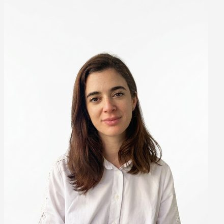

Consultoría financiero-operativa
El número es solo el resultado. El problema está en el recorrido.
Ayudo a empresas de servicios en crecimiento a entender dónde se pierde visibilidad entre sus procesos, sistemas y finanzas, y qué conviene resolver primero.
Victoria Marin · Buenos Aires
Cuando la empresa crece más rápido que su estructura
-
Información repartida
Los datos están en distintas planillas, sistemas o personas.
-
Demasiado trabajo manual
Cada cierre obliga a volver a cruzar información y corregir diferencias.
-
Decisiones con poca visibilidad
Sabés que la empresa funciona, pero cuesta entender con precisión qué está pasando.
Muchas veces el problema aparece en los números, pero empezó antes: en un proceso, una herramienta o una responsabilidad mal definida.
Servicio inicial
Primero, entender.
Diagnóstico Financiero-Operativo
En 2–3 semanas reconstruimos cómo circulan el dinero y la información dentro de tu empresa, identificamos los principales problemas y definimos qué conviene resolver primero.
-
01
Radiografía
Qué está pasando realmente.
-
02
Hallazgos y prioridades
Dónde están los riesgos y cuellos de botella.
-
03
Hoja de ruta
Qué cambiar, en qué orden y por qué.
Después decidís cómo seguir. Podés implementar la hoja de ruta internamente, con terceros o con VestaOps.

Detrás de VestaOps
Soy Victoria Marin. Hace más de 10 años trabajo entre finanzas, operaciones y sistemas, resolviendo problemas que muchas veces parecen financieros pero cuyo origen está en cómo funciona la operación.
Mi foco no es solamente corregir el número. Es entender por qué llegó así y construir una forma de trabajar que no obligue a corregirlo todos los meses.
- +10 años de experiencia
- Finanzas + Operaciones + Sistemas
- Entornos locales e internacionales
Antes de cambiar más cosas, entendamos qué está pasando.
Agendemos 30 minutos para conocer tu situación y ver si el Diagnóstico Financiero-Operativo tiene sentido para tu empresa.
Victoria Marin
vimarinochoa@gmail.com
LinkedIn